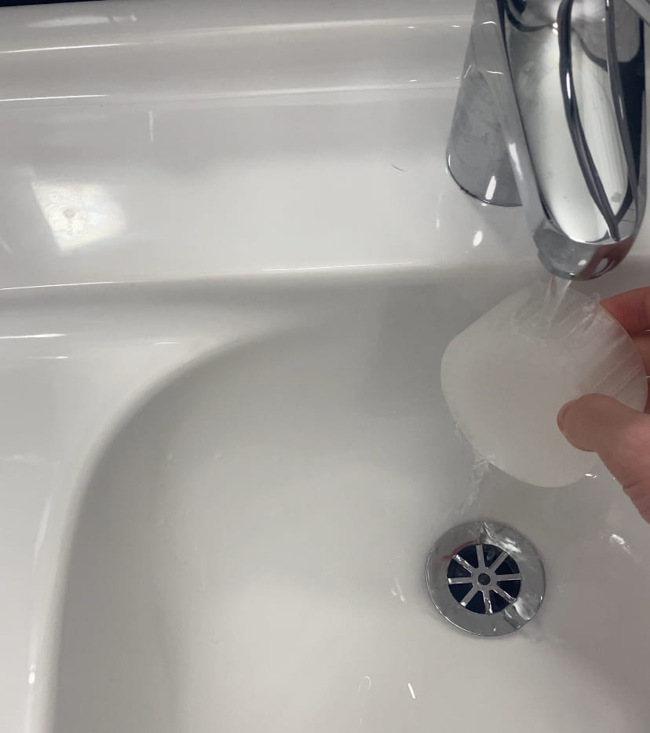
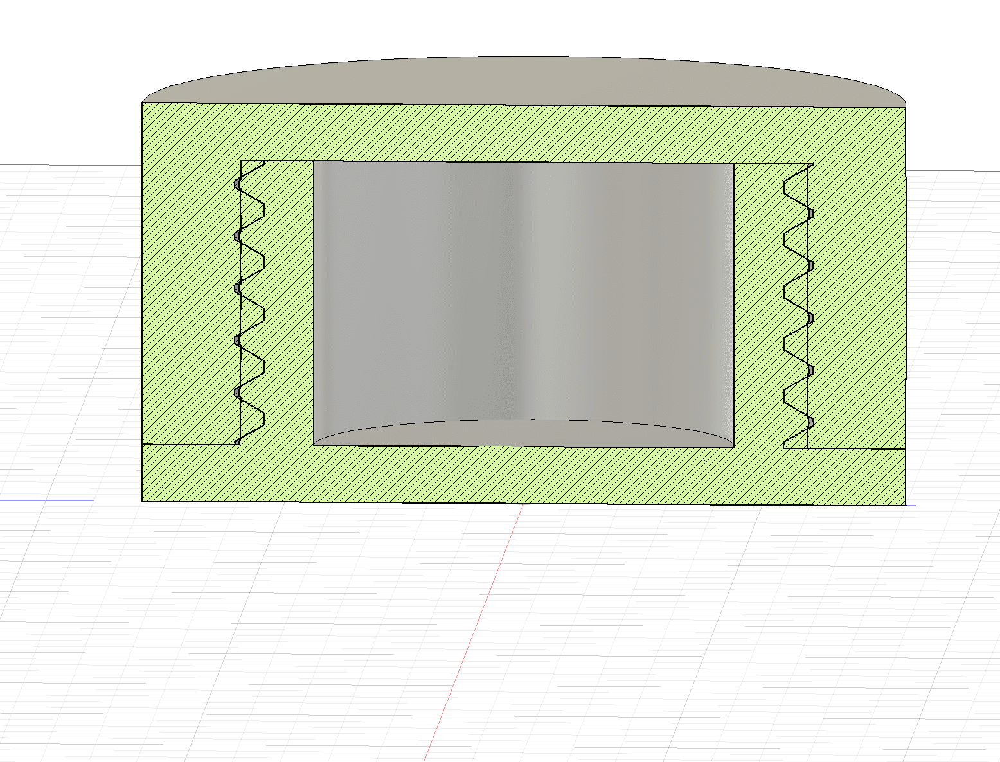
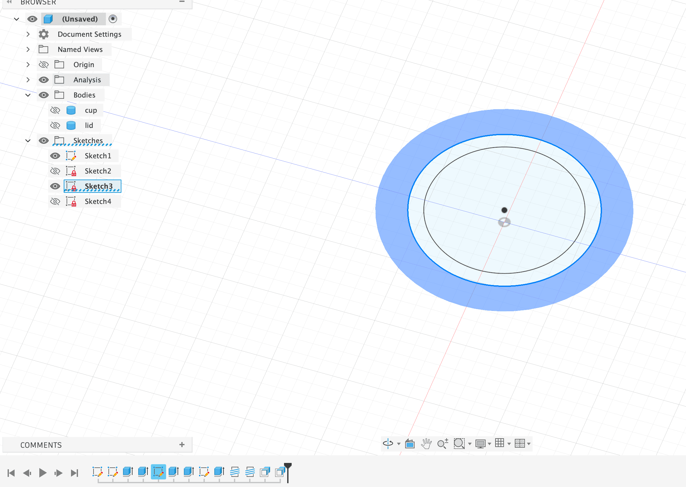
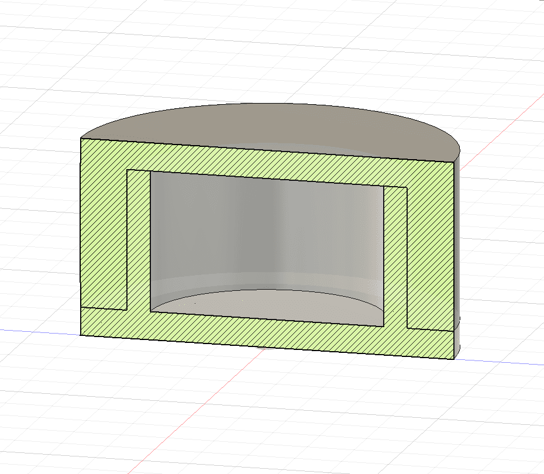
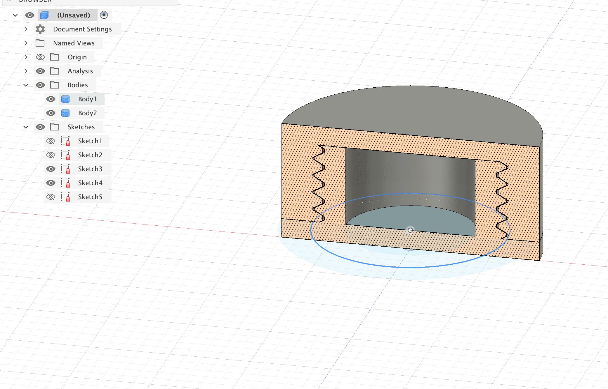

01 / Final prototype
A container built to keep water out
I designed a cylindrical container to protect a sensor in wet conditions. I chose 3D printing over laser-cut parts because I could build the threads and sealing features directly into the two components.
The final prototype consists of a cup and a separate lid. I tested the assembled container under water to check whether the connection could keep water out.


02 / Iteration
The threads took several attempts
The hardest part was modelling the threads. I didn't know how to implement them properly at first, and several attempts failed even after I made small changes to the dimensions.
Instead of continuing to adjust a model that wasn't working, I restarted the sketches and rebuilt the design from the basics. This taught me that the thread geometry and the relationship between the two parts need to be planned carefully from the beginning.


03 / CAD modelling
Make the two parts fit together
I modelled the cup and lid as separate components so their connection could be developed and inspected. The threads needed to match for the lid to engage with the cup.
Using section analysis helped me inspect the thread geometry inside the model. Working through these details made me more aware of how dimensional accuracy affects the fit and function of a 3D-printed object.


04 / Fabrication and next steps
From the model to a physical prototype
Getting the model ready for printing took nearly three hours. I followed a tutorial for guidance, but preparing the threaded components was still a challenge.
The process showed me how much thread design and dimensional accuracy matter when separate printed parts need to fit together. Next, I want to experiment with adding a magnet so the container can attach to different surfaces and be used to position objects.